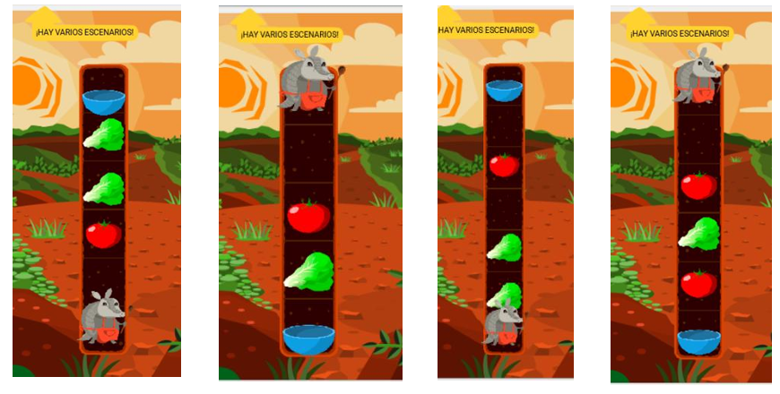
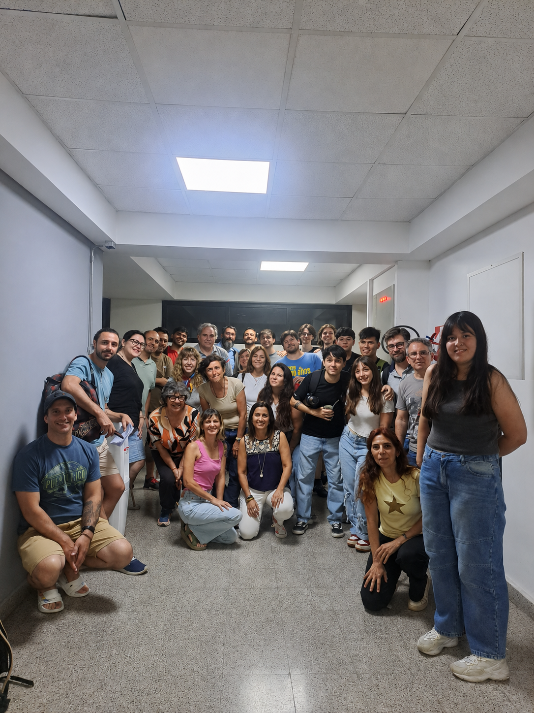

Progresión didáctica
Una secuencia gradual, desde los primeros programas hasta parámetros.

Proyecto educativo · UNAHUR
Una colección de guías prácticas, presentaciones y desafíos creados para aprender programación con Pilas Bloques.

El proyecto
La propuesta reformula la enseñanza de Introducción a la Lógica y Problemas Computacionales mediante Pilas Bloques, contenidos propios y secuencias de desafíos.
Una secuencia gradual, desde los primeros programas hasta parámetros.
Escenarios diseñados para poner en juego cada concepto de programación.
Recursos adaptables y reutilizables en distintas propuestas de enseñanza.
Colección didáctica
Las guías, las presentaciones y los desafíos asociados se organizan por unidad.
UNIDAD DISPONIBLE
Producciones integradoras
Propuestas que articulan programación, creatividad, trabajo colectivo y temáticas significativas, junto con una selección de entregas.
Creación de un logotipo grupal con procedimientos y repetición simple.
Revisión del logotipo para incorporar procedimientos con parámetros.
Producción visual sobre Memoria, Verdad y Justicia a 50 años del golpe cívico-militar.
Diseño de un ejercicio propio utilizando el creador de desafíos de Pilas Bloques.
Producción visual grupal mediante procedimientos y repeticiones simples.
Producción original
Cada actividad combina una consigna, uno o más escenarios y una intención pedagógica claramente definida.
Equipo

El sitio reconocerá la participación de quienes diseñaron, desarrollaron, revisaron e implementaron los materiales.
Nombre y función dentro del proyecto
Nombres y aportes realizados
Implementación y revisión pedagógica
Acompañamiento y producción de materiales
Pilas Bloques en las aulas
Una mirada a la experiencia de enseñar y aprender programación: exploración, intercambio de ideas y construcción colectiva de soluciones.
Recorrer la galería →